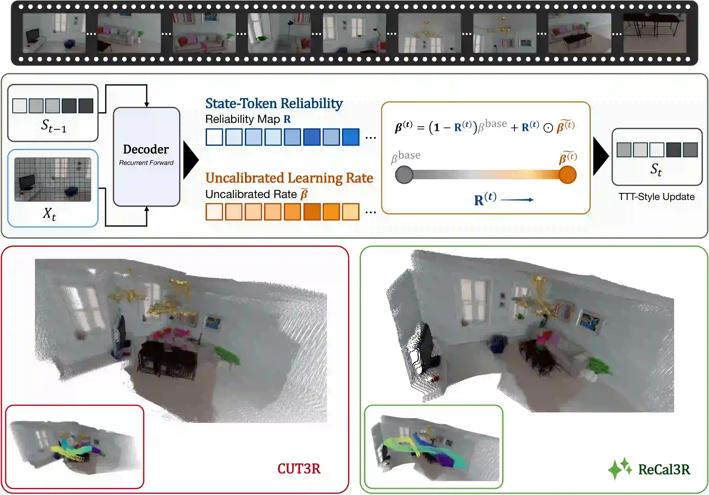

ReCal3R: Reliability-Calibrated Learning Rates for Streaming 3D Reconstruction
1Beijing Normal-Hong Kong Baptist University 2Hong Kong Baptist University 3Jilin University
4Guangdong Provincial Key Laboratory of Interdisciplinary Research and Application for Data Science
5Nanyang Technological University
* Corresponding author: Wentao Cheng. Email: wentaocheng@bnbu.edu.cn
Abstract
Streaming 3D reconstruction must absorb unbounded image streams into a compact scene state with constant memory and per-frame cost. Existing recurrent methods make this setting practical, but their state updates become increasingly fragile over long horizons: the model may still write aggressively even when the receiving state token has already drifted away from a reliable geometric representation. ReCal3R addresses this failure mode by decoupling whether a token should accept new evidence from how strongly the current observation should update it. The method derives token trust from the maintained state and combines it with an observation-driven coherence rate, enabling conservative fallback updates for degraded tokens while preserving plasticity for informative frames. Plugged into CUT3R without training or additional learnable parameters, ReCal3R substantially improves long-horizon generalization across pose, depth, and reconstruction, including a 3.7× reduction in ATE on 1,000-frame ScanNet sequences.
Visualization
Browse representative reconstruction and sequence visualization results. Click a thumbnail below to load the corresponding video.
Method

Long-Horizon Accuracy and Efficiency
On 1,000-frame ScanNet sequences, ReCal3R achieves the lowest ATE (0.211), a 3.7× reduction over CUT3R, while retaining practical throughput (19.9 FPS) and CUT3R-level GPU memory (6.1 GB). These results show that trust-aware state updates substantially improve long-horizon accuracy without sacrificing the bounded-memory streaming design.

Qualitative Visualization
Click an RGB thumbnail below to load its corresponding 3D reconstruction. Drag to orbit, scroll to zoom, and inspect the scene geometry interactively in the browser.
BibTeX
@article{li2026recal3r,
title = {ReCal3R: Reliability-Calibrated Learning Rates for Streaming 3D Reconstruction},
author = {Li, Xinze and Wang, Yiyuwan and Chen, Pengxu and Cheng, Wentao and Fan, Wentao and Su, Weifeng and Lin, Weisi},
journal = {arXiv preprint},
year = {2026}
}Contact
For questions about the paper, please contact Wentao Cheng: wentaocheng@bnbu.edu.cn.